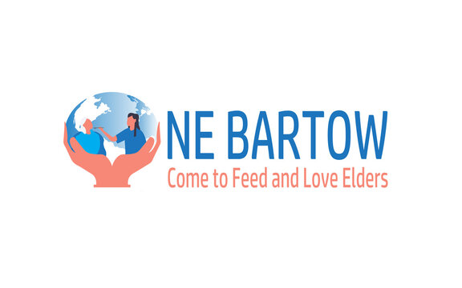

Our Clients


"Food Waste will never be able to address hunger because hunger isnt about a lack of food Its about a lack of income,people are food insecure because they cant afford to eat."
India has been facing food-related challenges for several decades, including a high prevalence of malnutrition, hunger, and food insecurity. Despite being one of the world's largest food producers, India still struggles to provide adequate nutrition to its population, especially in rural areas.It has been estimated that between 2019 and 21, around 56 crore Indians, or 40.6 per cent of the total population, had moderate or severe food insecurity.
Food wastage is a major global issue that affects both developed and developing countries. One-third of all food produced in the world is lost or wasted, which amounts to approximately 1.3 billion tons of food per year. Food wastage has numerous negative impacts, including economic, social, and environmental consequences.In addition to these environmental impacts, food wastage also has social implications, as it deprives people of access to food, exacerbates food insecurity, and contributes to the perpetuation of poverty.
Distributing food to NGOs is a common strategy used in food waste management. NGOs, or non-governmental organizations, often work with vulnerable and marginalized communities, such as low-income families, the homeless, and those experiencing food insecurity. By donating food to these organizations, we can ensure that it is put to good use and provides much-needed nutrition to those who need it most.Finally, it can also provide economic benefits, as NGOs often work with local communities and support small businesses.